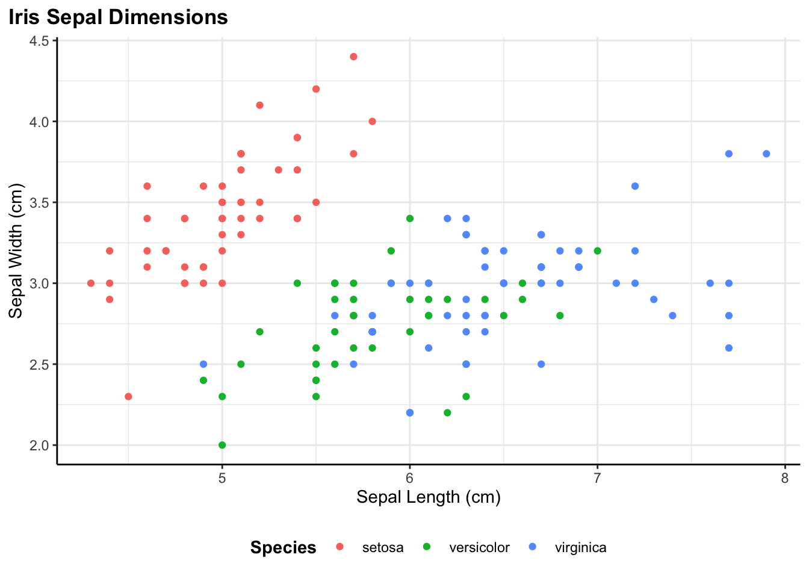
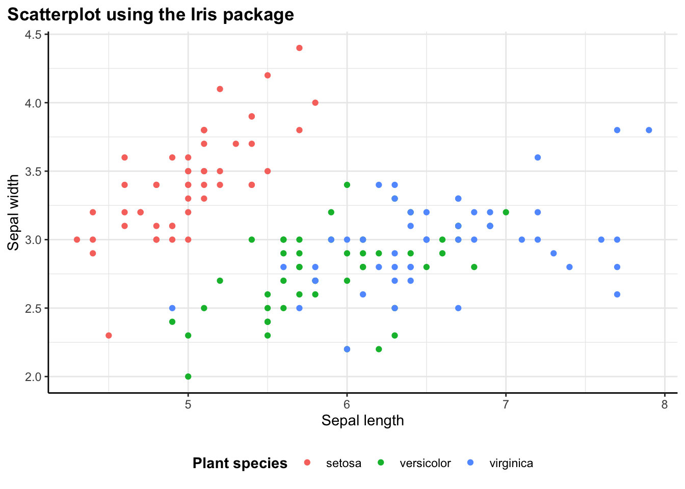
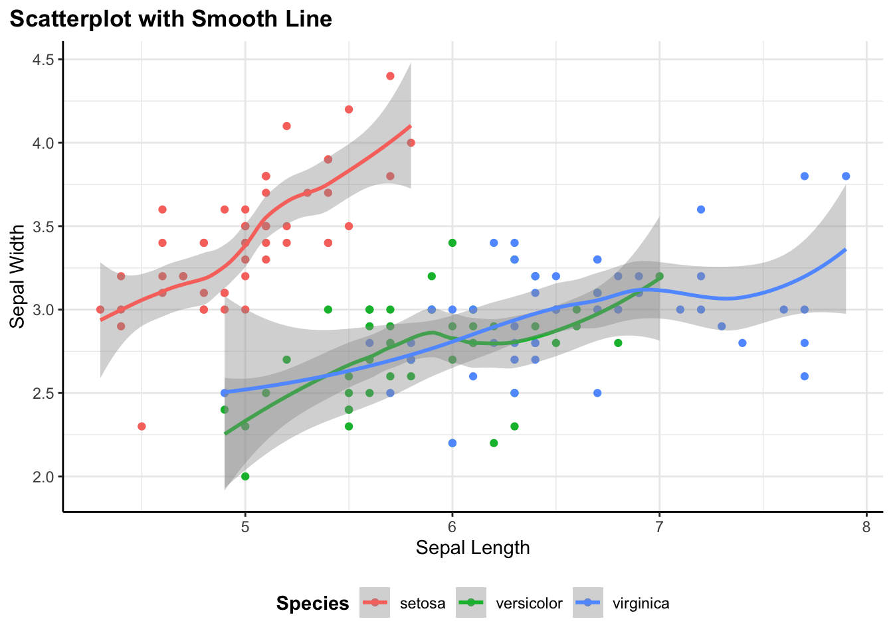
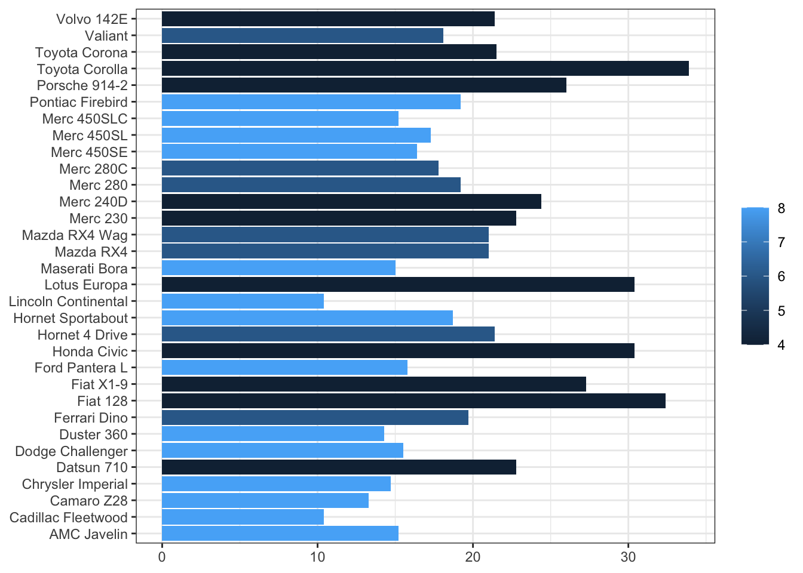
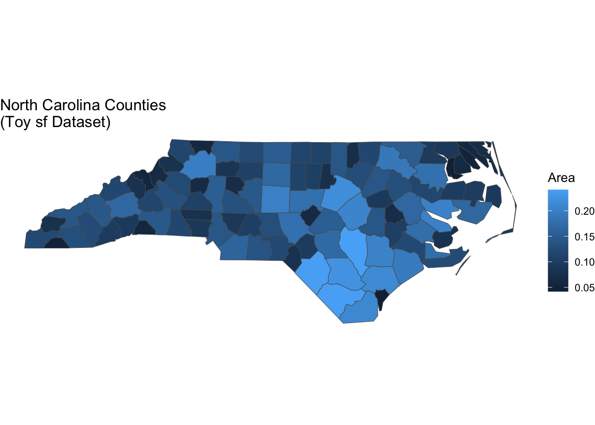
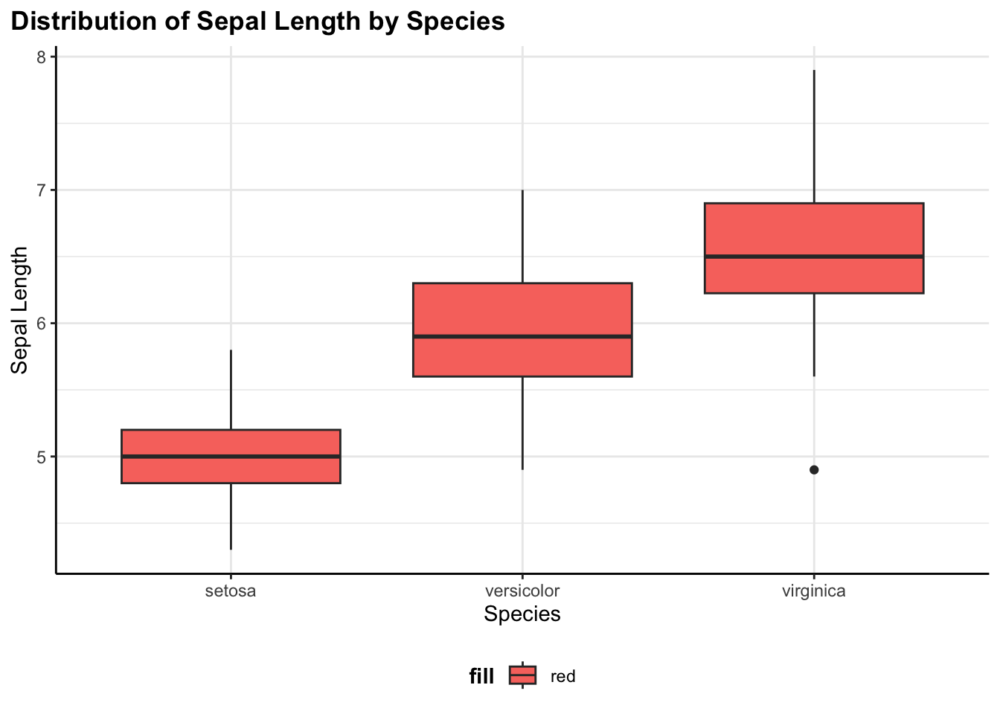
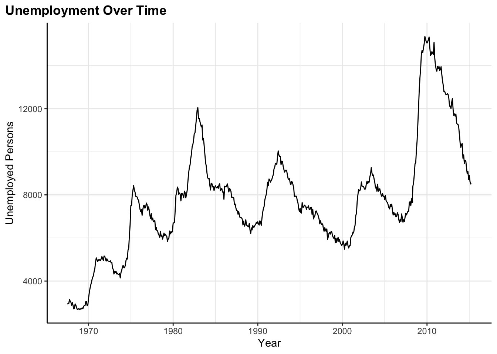
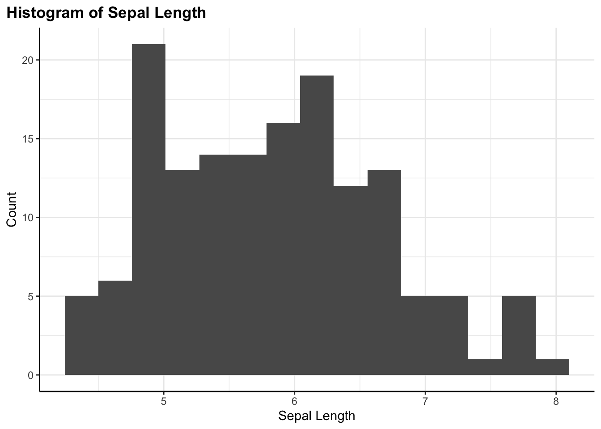
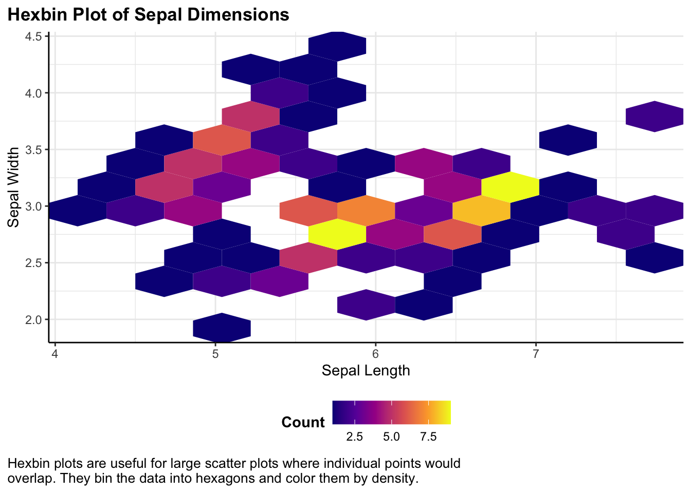

# ==========================================================================
# LIBRARIES
# ==========================================================================
librarian::shelf(
tidyverse,
scales,
sf
)
# ==========================================================================
# FLEXIBLE PLOTTING FUNCTION
# ==========================================================================
flex_plot <- function(
#
# Function parameters
# ------------------------------------------------------------------------
# data and geom
# -------------------
data,
geom = ggplot2::geom_point,
aes_main = list(),
# facets
# -------------------
facet_rows = NULL,
facet_cols = NULL,
# scales
# -------------------
scales = list(),
# labels
# -------------------
labs = list(
title = NULL,
subtitle = NULL,
caption = NULL,
caption_wrap_width = NULL,
x = NULL,
y = NULL,
fill = NULL,
color = NULL
),
# my custom plot theme
# -------------------
theme_fn =
theme_bw() +
theme(
legend.position = "bottom",
legend.title = element_text(face = "bold"),
# can uncomment if necessary
#legend.text = element_text(size = 14, face = "bold"),
#axis.title.x = element_text(size = 14), # Increase x-axis label size
#axis.title.y = element_text(size = 14), # Increase y-axis label size
#axis.text.x = element_text(size = 14), # Increase x-axis tick labels
#axis.text.y = element_text(size = 14), # Increase y-axis tick labels
plot.title.position = "plot",
plot.title = element_text(face = "bold"),
#plot.subtitle = element_text(size = 16, face = "bold.italic", hjust = 0.05),
plot.caption = element_text(size = 10, hjust = 0),
plot.caption.position = "plot",
# Custom panel border (only left and bottom)
panel.border = element_blank(),
axis.line.x = element_line(color = "black"), # Bottom border
axis.line.y = element_line(color = "black") # Left border
),
# coordinate systems
# -------------------
coord_flip = FALSE,
coord_sf = FALSE,
# saving
# -------------------
save_path = NULL,
#save_width = 10, # can set if specific size desired
#save_height = 10, # can set if specific size desired
save_dpi = 300,
...
) {
#
# Build the plot
# ------------------------------------------------------------------------
# base plot
# -------------------
p <- ggplot2::ggplot(data = data)
# main geom
# -------------------
p <- p + geom(mapping = do.call(ggplot2::aes, aes_main), ...)
# coordinates
# -------------------
if (coord_flip) p <- p + ggplot2::coord_flip()
if (coord_sf) p <- p + ggplot2::coord_sf()
# facets
# -------------------
if (!is.null(facet_rows) || !is.null(facet_cols)) {
p <- p + ggplot2::facet_grid(rows = facet_rows, cols = facet_cols)
}
# scales
# -------------------
for (sc in scales) p <- p + sc
# caption wrap
# -------------------
if (!is.null(labs$caption) && !is.null(labs$caption_wrap_width)) {
labs$caption <- stringr::str_wrap(labs$caption, width = labs$caption_wrap_width)
}
# labels
# -------------------
p <- p + do.call(ggplot2::labs, labs)
# theme
# -------------------
p <- p + theme_fn
# save
# -------------------
if (!is.null(save_path)) {
dir.create(dirname(save_path), showWarnings = FALSE, recursive = TRUE)
ggplot2::ggsave(
filename = save_path,
plot = p,
#width = save_width, # can set if specific size desired
#height = save_height, # can set if specific size desired
dpi = save_dpi
)
message("Plot saved to: ", save_path)
}
return(p)
}Flex plot
So here’s the flex_plot function I use and the dependent libraries. Generally, I’ll source this function in a separate functions.r script or load it into my environment from a personal analysis package I use. Here’s the full function and the libraries it needs:
Quick Start: A Simple Example
Before diving into the details, let me show you what this looks like in practice. Here’s a basic scatter plot with custom labels and automatic saving:
flex_plot(
data = iris,
geom = ggplot2::geom_point,
aes_main = list(
x = quote(Sepal.Length),
y = quote(Sepal.Width),
color = quote(Species)
),
labs = list(
title = "Iris Sepal Dimensions",
x = "Sepal Length (cm)",
y = "Sepal Width (cm)",
color = "Species"
),
save_path = "output/iris_scatter.png"
)
That’s it. The plot is created with consistent styling, properly labeled, and automatically saved to the specified path. Now let me walk through how each component works.
Understanding the flex_plot() Function
Let me walk through how the function works, argument by argument. Understanding the structure will help you see why it’s both powerful and flexible.
Data and Geometry
The first three parameters are the core of any plot. data is my data frame—whatever I’m visualizing. geom specifies the type of plot I want to make, and it accepts any ggplot geometry function: geom_point, geom_line, geom_bar, geom_boxplot, you name it. I’ve set the default to geom_point because scatter plots are probably the most common exploratory plot I make, but I can override this with any geometry.
flex_plot <- function(
data,
geom = ggplot2::geom_point,
aes_main = list(),
...
)The aes_main parameter is where I specify my aesthetic mappings—which variables map to x, y, color, fill, size, etc. This is passed as a list, and I need to use quote() around variable names. I’ll explain why in a moment, but first let me show you what this looks like in practice:
aes_main = list(
x = quote(Sepal.Length),
y = quote(Sepal.Width),
color = quote(Species)
)This says: map Sepal.Length to the x-axis, Sepal.Width to the y-axis, and color the points by Species. The quote() function is necessary because of how R handles variable names in functions. Without quote(), R would try to find a variable called Sepal.Length in my current environment (and probably fail). With quote(), the variable name is preserved and passed through to ggplot, which knows to look for it inside the data frame. It’s a bit of R metaprogramming that makes the function work smoothly.
The ... argument is crucial for flexibility. It captures any additional arguments I pass and forwards them to the geometry function. This means if geom_histogram() needs a bins argument or geom_point() needs an alpha value for transparency, I can just pass them along without having to explicitly build support for every possible parameter into the function.
Faceting
Faceting is ggplot’s way of creating small multiples—splitting my data by one or more categorical variables and creating a separate panel for each group. I use this all the time when I want to see if a relationship holds across different categories. For example, does the relationship between sepal length and width look the same for all three iris species?
If I want to facet, I pass the faceting variables using vars() from ggplot. For instance, facet_rows = vars(Species) would create a separate row for each species. I can facet by both rows and columns if I want a grid layout. If I don’t need faceting (which I use surprisingly often), these default to NULL and the function just skips that step.
facet_rows = NULL,
facet_cols = NULL,Scales
scales = list(),Scales control how my data values map to visual properties. The most common use case for me is customizing color palettes—maybe I want to use a colorblind-friendly palette, or match my organization’s brand colors, or use a perceptually uniform color scale I created for continuous data (e.g., my_colors). But scales can also transform my axes (log scale, anyone?), control breaks and labels, and more.
I pass scales as a list of scale functions. For example:
scales = list(
scale_color_brewer(palette = my_colors),
scale_y_log10()
)This would apply my_colors color palette and put the y-axis on a log scale. The function applies each scale in the list to the plot. If I don’t need custom scales, the list stays empty and ggplot uses its defaults.
Labels
labs = list(
title = NULL,
subtitle = NULL,
caption = NULL,
caption_wrap_width = NULL,
x = NULL,
y = NULL,
fill = NULL,
color = NULL
),This is probably my favorite part of the function because it keeps all the text in one organized place. Instead of having labels scattered through my code, I specify them all in a single list. Title, subtitle, caption, axis labels, legend titles—everything goes here.
I’ve set all the defaults to NULL, which means if I don’t specify a label, ggplot will use its default (usually the variable name). But when I’m making presentation-ready figures, I’ll want to provide clear, descriptive labels. Having them all in one place makes it easy to see at a glance what text will appear on my plot, and easy to update if I need to change wording.
Caption Wrapping
Another small but useful feature I added is automatic caption wrapping because I often have little notes I need to add to help colleagues or teams know what they are looking at. Captions often contain longer text—data sources, methodological notes, attribution—and manually inserting line breaks with \n gets tedious, it’s hard to read in your code, and is very tedious.
The caption_wrap_width parameter solves this. If I provide a width (in characters), the function automatically wraps my caption text to that width using stringr::str_wrap():
if (!is.null(labs$caption) && !is.null(labs$caption_wrap_width)) {
labs$caption <- stringr::str_wrap(labs$caption, width = labs$caption_wrap_width)
}This happens before the labels are applied to the plot, so ggplot receives a nicely formatted caption with line breaks already inserted at sensible locations. The width of 80 characters works well for most of my plots, but I can adjust it based on my plot size and layout. It’s still a little trial-and-error but much easier to find the sweet spot.
Theme
theme_fn =
theme_bw() +
theme(
legend.position = "bottom",
legend.title = element_text(face = "bold"),
# can uncomment if necessary
#legend.text = element_text(size = 14, face = "bold"),
#axis.title.x = element_text(size = 14),
#axis.title.y = element_text(size = 14),
#axis.text.x = element_text(size = 14),
#axis.text.y = element_text(size = 14),
plot.title.position = "plot",
plot.title = element_text(face = "bold"),
#plot.subtitle = element_text(size = 16, face = "bold.italic", hjust = 0.05),
plot.caption = element_text(size = 10, hjust = 0),
plot.caption.position = "plot",
# Custom panel border (only left and bottom)
panel.border = element_blank(),
axis.line.x = element_line(color = "black"),
axis.line.y = element_line(color = "black")
),This is where the consistency magic happens. I can pass any ggplot theme function here—theme_bw(), theme_minimal(), theme_classic(), or even a custom theme I’ve defined myself.
In my own work, I’ve defined a custom theme (shown above in the function definition) that sets font sizes, legend positioning, axis line styling, and other visual properties exactly how I want them. Every time I call flex_plot(), this theme is applied automatically. If I ever want to change the styling across all my figures—say, increase the font size for a presentation—I just update the theme definition once in the function, and all my plots update automatically.
The default combines theme_bw() with custom modifications because it’s clean and professional-looking, but you should absolutely customize this to match your needs. You can override it by passing a different theme_fn parameter.
Coordinate Systems
coord_flip = FALSE,
coord_sf = FALSE,These handle special coordinate transformations. coord_flip = TRUE rotates my plot 90 degrees, which is especially useful for bar charts with long category labels. Instead of tilting my head or rotating text at awkward angles, I just flip the coordinates and everything becomes readable.
coord_sf = TRUE is specifically for spatial data—maps and geographic visualizations. If I’m working with shapefiles or other spatial data formats using the sf package, I need coord_sf() to ensure my map displays with the correct projection and spatial properties. Rather than remembering to add this every time I make a map, I built it into the function as a simple toggle.
Saving Plots
save_path = NULL,
#save_width = 10, # can set if specific size desired
#save_height = 10, # can set if specific size desired
save_dpi = 300,One of the most useful additions I made to the function is built-in plot saving. Instead of creating a plot and then separately calling ggsave(), I can save the plot directly by specifying a file path relative to the working directory.
The save_path parameter takes a file path where I want to save my plot. If I leave it as NULL (the default), the function just returns the plot without saving anything. But if I provide a path like save_path = "figures/my_plot.png", the function will automatically save the plot for me.
The save_dpi parameter controls the resolution—I’ve set the default to 300 DPI, which is standard for publication-quality figures. I can adjust this if I need higher resolution for print or lower resolution for web use.
Here’s what happens behind the scenes when I provide a save path:
if (!is.null(save_path)) {
dir.create(dirname(save_path), showWarnings = FALSE, recursive = TRUE)
ggplot2::ggsave(
filename = save_path,
plot = p,
dpi = save_dpi
)
message("Plot saved to: ", save_path)
}The function creates the directory if it doesn’t exist (so I don’t have to manually create my figures/ folder first), saves the plot using ggsave(), and prints a confirmation message telling I where the file was saved. This is especially helpful when I’m generating multiple plots in a loop—you get immediate feedback that each one saved successfully.
One thing to note: I’ve commented out the save_width and save_height parameters for now. ggsave() defaults to using the size of my current graphics device, which usually works well. But if I need specific dimensions, I can uncomment those parameters and set them to whatever I need.
How the Function Builds the Plot
Now that you’ve seen the function in action with several examples, let me show you how it builds plots step by step. Inside the function, the plot is constructed incrementally:
# Start with the base ggplot object
# -------------------
p <- ggplot2::ggplot(data = data)
# Add the main geometry with aesthetics
# -------------------
p <- p + geom(mapping = do.call(ggplot2::aes, aes_main), ...)
# Apply coordinate transformations if requested
# -------------------
if (coord_flip) {
p <- p + ggplot2::coord_flip()
}
if (coord_sf) {
p <- p + ggplot2::coord_sf()
}
# Add facets if specified
# -------------------
if (!is.null(facet_rows) || !is.null(facet_cols)) {
p <- p + ggplot2::facet_grid(rows = facet_rows, cols = facet_cols)
}
# Apply custom scales
# -------------------
for (sc in scales) {
p <- p + sc
}
# Wrap a caption so it's not cut off
# -------------------
if (!is.null(labs$caption) && !is.null(labs$caption_wrap_width)) {
labs$caption <- stringr::str_wrap(labs$caption, width = labs$caption_wrap_width)
}
# Add labels
# -------------------
p <- p + do.call(ggplot2::labs, labs)
# Apply theme
# -------------------
p <- p + theme_fn
# Save figure if requested
# -------------------
if (!is.null(save_path)) {
dir.create(dirname(save_path), showWarnings = FALSE, recursive = TRUE)
ggplot2::ggsave(
filename = save_path,
plot = p,
#width = save_width,
#height = save_height,
dpi = save_dpi
)
message("Plot saved to: ", save_path)
}
# Return figure to view
# -------------------
return(p)The key thing to notice is that this follows the exact same logic you’d use if you were building the plot manually, just organized into a reusable function. Each step is optional—if I don’t specify facets, that code doesn’t run. If I don’t provide custom scales, the loop just skips over. This means the function adapts to my needs without forcing me to specify parameters I don’t care about.
The do.call() bits are R’s way of calling a function with arguments stored in a list. It’s what lets me pass my aesthetic mappings and labels through to ggplot’s functions dynamically.
Some Example Plots
Now let’s see the function in action with different types of visualizations and specifications.
Starting Simple: Scatter Plots
The most basic use case is a scatter plot. In the iris example, I’m plotting sepal length against sepal width, colored by species:
flex_plot(
data = iris,
geom = ggplot2::geom_point,
aes_main = list(
x = quote(Sepal.Length),
y = quote(Sepal.Width),
color = quote(Species)
),
labs = list(title = "Scatterplot using the Iris package",
x = "Sepal length",
y = "Sepal width",
color = "Plant species")
)
Without the wrapper function, this would require writing out ggplot(iris) + geom_point(aes(x = Sepal.Length, y = Sepal.Width, color = Species)) + labs(...) + theme_bw(). With flex_plot(), the code is more structured and easier to read. All the aesthetic mappings are together, all the labels are together, and the intent is clear.
The quote() around variable names might look odd at first, but once I get used to it, it becomes second nature. It’s a small price to pay for the flexibility the function provides.
Adding Layers: Smooth Lines
I often find myself creating one plot and then wanting to add something on to it. One of my favorite features of this approach is that flex_plot() returns a standard ggplot object. This means I haven’t locked myself out of ggplot’s layering system:
# Base scatterplot
p <- flex_plot(
data = iris,
geom = ggplot2::geom_point,
aes_main = list(
x = quote(Sepal.Length),
y = quote(Sepal.Width),
color = quote(Species)
),
labs = list(
title = "Scatterplot with Smooth Line",
x = "Sepal Length",
y = "Sepal Width",
color = "Species"
)
)
# Add smoothing line using standard ggplot syntax
p + ggplot2::geom_smooth(
aes(x = Sepal.Length, y = Sepal.Width, group = Species, color = Species),
method = "loess",
se = TRUE
)
I can create the base scatter plot with flex_plot(), save it to a variable p, then add a geom_smooth() layer on top using regular ggplot syntax. The function handles the repetitive setup, but I can still use the full power of ggplot for customization.
This is crucial to my design philosophy: the function isn’t trying to be a complete replacement for ggplot. It handles the boilerplate while keeping all of ggplot’s capabilities accessible. I get convenience without sacrificing flexibility.
Flipping Coordinates: Bar Charts
I am always making bar charts. I often find that categorical labels look better horizontally, especially when the category names are long:
flex_plot(
data = mtcars,
geom = ggplot2::geom_col,
aes_main = list(
x = quote(rownames(mtcars)),
y = quote(mpg),
fill = quote(cyl)
),
coord_flip = TRUE, # flip coords by setting to TRUE
theme_fn = ggplot2::theme_bw() # use a different theme
)
In base ggplot, I’d add + coord_flip() to rotate the plot. With flex_plot(), I just set coord_flip = TRUE. This might seem like a small thing, but these little conveniences add up. When I’m exploring data and making a dozen quick plots, not having to remember the exact function name for every operation makes my workflow noticeably smoother.
Notice also that I’m using rownames(mtcars) in the aesthetic mapping. The mtcars dataset stores car names as row names rather than as a column, which is a somewhat unique structure. The function handles this without issue—it just passes the expression through to ggplot, which evaluates it in the context of the data. This flexibility means I can still do data transformations on the fly without preprocessing my data frame.
Spatial Data: Maps
I work with spatial data all the time and working with spatial data in R usually means using the sf package and geom_sf() for plotting. These plots also need coord_sf() to display properly with correct spatial coordinates and projections:
# load spatial dataset
nc <- sf::st_read(system.file("shape/nc.shp", package="sf"), quiet = TRUE)
flex_plot(
data = nc,
geom = ggplot2::geom_sf,
aes_main = list(fill = quote(AREA)),
theme_fn = ggplot2::theme_void(), # remove axes
coord_sf = TRUE, # use spatial coords
labs = list(
title = "North Carolina Counties \n(Toy sf Dataset)",
fill = "Area"
)
)
So, I’ve included parameter options to easily switch to map making. Setting coord_sf = TRUE tells flex_plot() to apply the proper coordinate system for spatial data. I’m also using theme_void() here for a clean look without axis lines or tick marks—a common choice for maps. The function handles all the spatial-specific setup automatically.
This has been particularly helpful when creating reports that mix standard plots with maps. There’s a lot more I can do with mapping in R but sometimes I just want a quick visualization—and this allows me to do that. The code structure stays consistent across all visualizations, which makes the overall document easier to read and maintain. I don’t have to context-switch between “regular plot mode” and “map mode”—it’s all the same function with different parameters.
Different Geometries, Same Structure
One of the most satisfying aspects of this function is how similar the code looks whether I’m making a boxplot, line chart, histogram, or hexbin plot. The basic structure stays the same: specify data, choose geometry, map aesthetics, add labels.
Boxplot
flex_plot(
data = iris,
geom = ggplot2::geom_boxplot,
aes_main = list(
x = quote(Species),
y = quote(Sepal.Length),
fill = "red"
),
labs = list(
title = "Distribution of Sepal Length by Species",
x = "Species",
y = "Sepal Length"
)
)
This shows the distribution of sepal length across the three iris species. Boxplots are great for comparing distributions and spotting outliers.
Line chart
flex_plot(
data = economics,
geom = ggplot2::geom_line,
aes_main = list(
x = quote(date),
y = quote(unemploy)
),
labs = list(
title = "Unemployment Over Time",
x = "Year",
y = "Unemployed Persons"
)
)
Here I’m tracking unemployment over time using the built-in economics dataset. Line charts are perfect for time series data where I want to see trends and patterns over time.
Histogram
flex_plot(
data = iris,
geom = ggplot2::geom_histogram,
aes_main = list(x = quote(Sepal.Length)),
bins = 15, # extra geom parameter passed via ...
labs = list(
title = "Histogram of Sepal Length",
x = "Sepal Length",
y = "Count"
)
)
A histogram showing the distribution of a single continuous variable. Notice the bins = 15 parameter—this is being passed through the ... argument directly to geom_histogram().
Each of these would normally require slightly different ggplot syntax and different things to remember. With flex_plot(), I just change the geom parameter and adjust the aesthetic mappings to match what that geometry expects. The rest—labels, themes, coordinates—works the same way every time.
Passing Extra Parameters
Some geometries need specific parameters beyond the standard aesthetics. Rather than trying to anticipate every possible parameter someone might need, I use the ... argument to pass extra parameters directly to the geom:
flex_plot(
data = iris,
geom = ggplot2::geom_hex,
aes_main = list(
x = quote(Sepal.Length),
y = quote(Sepal.Width)
),
bins = 10, # number of hex bins
scales = list(ggplot2::scale_fill_viridis_c(option = "plasma")),
labs = list(
title = "Hexbin Plot of Sepal Dimensions",
x = "Sepal Length",
y = "Sepal Width",
fill = "Count",
caption = "Hexbin plots are useful for large scatter plots where individual points would overlap. They bin the data into hexagons and color them by density.",
caption_wrap_width = 80
),
save_path = "output/hexbin.png"
)
Hexbin plots are useful for large scatter plots or dense data where individual points would overlap. They bin the data into hexagons and color them by density. Here, I’m passing bins = 10 to control how many hexagons to use, and I’m also using a custom color scale (the viridis plasma palette) for better perceptual uniformity.
Notice how I’m using the caption_wrap_width parameter to automatically format the long caption text. Instead of manually breaking it into lines, I just write it as one continuous string and let the function handle the formatting.
The function passes the bins parameter directly to geom_hex() without needing to know what it means. This keeps the function simple while maintaining flexibility. If ggplot adds new geoms or parameters in the future, they’ll work automatically without me having to update my function.
Why This Matters
The goal here isn’t to replace ggplot—it’s an excellent tool and I have no desire to hide its capabilities. Instead, this function reduces cognitive load for routine tasks I find myself doing. When I’m exploring data, it helps me make plots faster. When I’m creating reports to share, I can ensure consistent styling without copying and pasting theme code everywhere. And when I need something custom, I can still drop down to regular ggplot syntax or build on my function output because the function returns a standard ggplot object.
I think of it like having a set of shortcuts in the kitchen—pre-measured spice blends, pre-made sauce bases, a well-organized mise en place. These don’t replace cooking from scratch, but they make everyday cooking faster and more consistent. I spend less time on repetitive prep work and more time on the creative parts that actually matter. And when I want to make something special or unusual, all my regular ingredients and techniques are still right there, available whenever I need them.
For me, creating a function like flex_plot() has transformed how I work with data visualization. I spend less time wrestling with syntax and more time actually looking at my data and thinking about what it means.
Reach out if you have any improvements or are already doing something like this–I’d love to see your workflow, especially how you handing saving figures with figures to automatically adjust with comments (notes).
Quick Reference
Here’s a handy reference for the main flex_plot() parameters:
| Parameter | Description | Default |
|---|---|---|
data |
Your data frame | Required |
geom |
Geometry function (e.g., geom_point) |
geom_point |
aes_main |
Aesthetic mappings as a list with quote() |
list() |
facet_rows |
Facet by rows using vars() |
NULL |
facet_cols |
Facet by columns using vars() |
NULL |
scales |
List of scale functions | list() |
labs |
List of labels (title, x, y, caption, etc.) | All NULL |
labs$caption_wrap_width |
Character width for caption wrapping | NULL |
theme_fn |
Theme function or custom theme | Custom theme_bw() |
coord_flip |
Flip coordinates | FALSE |
coord_sf |
Use spatial coordinates for maps | FALSE |
save_path |
File path to save plot | NULL |
save_dpi |
Resolution for saved plots | 300 |
... |
Additional parameters passed to geom | — |